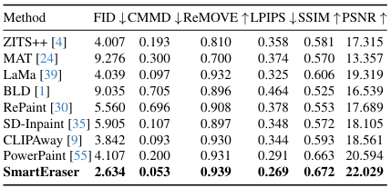

Object removal has so far been dominated by the mask-and-inpaint paradigm, where the masked region is excluded from the input, leaving models relying on unmasked areas to inpaint the missing region. However, this approach lacks contextual information for the masked area, often resulting in unstable performance. In this work, we introduce SmartEraser, built with a new removing paradigm called Masked-Region Guidance. This paradigm retains the masked region in the input, using it as guidance for the removal process. It offers several distinct advantages: (a) it guides the model to accurately identify the object to be removed, preventing its regeneration in the output; (b) since the user mask often extends beyond the object itself, it aids in preserving the surrounding context in the final result. Leveraging this new paradigm, we present Syn4Removal, a large-scale object removal dataset, where instance segmentation data is used to copy and paste objects onto images as removal targets, with the original images serving as ground truths. Experimental results demonstrate that our model, SmartEraser, significantly outperforms existing methods, achieving superior performance in object removal, especially in complex scenes with intricate compositions.
we introduce a novel paradigm for object removal called Masked-Region Guidance. The core idea is that the masked region should not be excluded but rather utilized as critical guidance during the removal process.
|
Comparison of the mask-and-inpaint paradigm and the proposed Masked-Region Guidance paradigm for object removal. |
Our method is straightforward: instead of replacing the masked region with a placeholder, we retain the original image as input, with the masked region indicated by a mask input, as in existing methods. This paradigm enables the model to accurately identify the target object, preventing unintended regeneration in the output and effectively preserving the surrounding context of the target object in the final result.
We introduce a synthetic technique to create training data specifically for object removal. Our approach involves pasting object instances from various images onto different background images to form the input images, with the pasted instance masks serving as the input masks and the original background images designated as ground truths. Using this method, we generate Syn4Removal, a large-scale dataset comprising triplets of real background images, masks, and backgrounds with pasted objects. The design of Syn4Removal provides diverse scenes and supports effective training under our new paradigm, encouraging the model to accurately learn object removal without shortcuts.
|
The data generation pipeline of Syn4Removal. We apply instances and images to construct a triplet consisting of an input image with removal targets, a mask, and the ground truth. |
To make Syn4Removal suitable for training object removal models, we design a pipeline to generate high-quality data. First, we filter out low-quality instances and background images. Then, we develop a method to calculate feasible pasting locations on the image, ensuring that objects do not overlap with instances in the pasted area, which helps prevent the model from regenerating unwanted objects. Last, the instance is pasted onto a background image with a blending algorithm. The resulting dataset consists of 1 million image triplets.
Using the Masked-Region Guidance paradigm and the Syn4Removal dataset, we design a framework based on text-to-image diffusion models for object removal. To enhance the model's robustness to varying mask shapes from user input, we introduce a mask enhancement technique that simulates different mask shapes over removal targets. Additionally, we incorporate CLIP-based visual guidance to assist the model in better understanding the removal targets. The resulting model called SmartEraser outperforms previous methods significantly in both quantitative and qualitative evaluations. We choose the name SmartEraser because the model can smartly identify removal targets and remove it while preserving its surrounding region.
|
Overall framework of SmartEraser. It fully utilizes the Masked-Region Guidance paradigm and the Syn4Removal dataset. |
Based on the proposed Masked-Region Guidance paradigm and the Syn4Removal dataset, we design a framework based on the text-to-image stable diffusion model for object removal. In this framework, we carefully design a user-friendly mask enhancement strategy and introduce CLIP-based visual guidance to further improve the capability of the model for object removal.
In real-world scenarios, users usually provide a loose or tight mask around the object to be removed. If the model were trained only with precise object masks, there would be a significant gap in mask shape and size between training and inference. To address this, during training, we apply various mask deformation methods to simulate the user input mask shapes. These techniques help the model generalize to different mask forms. Specifically, we use six mask types to augment the object mask.
|
Mask shapes from different mask enhancement methods. |
We evaluate the object removal capability of all baseline methods and our approach across three benchmarks in diverse scenarios. The benchmarks are constructed as follows: RORD-Val: Due to there are many triplets share the same background images as the ground truth in validation set of the RORD. To ensure unique scenes and high object quality, we filter this subset to obtain RORD-Val, a evaluation benchmark of real-photography image pairs. DEFACTO-Val: Derived from the splicing section of DEFACTO, we exclude examples where intented targets for removal significantly overlap with instances in the background images. Syn4Removal-Val: Generated using the pipeline of Syn4Removal with MSCOCO validation set as background images and OpenImages-v7 validation set offering instances.
|
Quantitative comparison of SmartEraser and previous methods on RORD-Val |
|
Quantitative comparison of SmartEraser and previous methods on DEFACTO-Val. |
|

Quantitative comparison of SmartEraser and previous methods on Syn4Removal-Val. |
We conduct extensive experiments to evaluate the performance of SmartEraser against baselines on the benchmarks. SmartEraser significantly outperforms all other methods across all metrics on the three benchmarks.
We present visualization comparison results of object removal using images from real scenes.
|
Qualitative comparison of SmartEraser and state-of-the-art methods. The samples are sourced from RORD-Val, which includes the ground truth after removal. |
To evaluate the effectiveness of the key components in our framework, we perform ablation studies and report both quantitative and qualitative results. We progressively modify the baseline (fine-tuning SD v1.5 with the mask-and-inpaint paradigm) by adding our proposed techniques: RG for masked-region guidance, ME for mask enhancement, and VG for CLIP-based visual guidance.
|
Qualitative ablation comparison of our method. From left to right, we progressively add each proposed component. |
|
Quantitative ablated comparison on RORD-Val. |
To further evaluate the object removal capability of SmartEraser in real-world user scenarios, we conduct a comparison with other methods (LaMa, CLIPAway, PowerPaint), using masks provided by users. We can observe that SmartEraser exhibits a remarkable ability to accurately identify and remove target objects while preserving surrounding contextual details, particularly in scenarios involving imperfect or approximate masks.
|
Qualitative comparison of SmartEraser and other methods in real-world user cases, in which users provide various mask shapes. The samples are sourced from real-world images and the validation set of MSCOCO. |
We provide qualitative comparisons between instruction-based methods and our SmartEraser. Instruct-Pix2Pix struggles in removing objects, often failing to remove the target objects, instead, introducing unrealistic edits to the objects. Another work Inst-Inpaint demonstrates a basic capability for object removal, but it faces challenges in more complex cases, resulting in incomplete object removal and poor coherence between the removed area and the background, as observed in the first and second samples. In contrast, SmartEraser effectively removes target objects accurately and preserves high background consistency and overall image quality.
|
Qualitative comparison of SmartEraser and existing instruction-based image editing method, which only rely on user input prompts for object removal. |
We explore the capability of SmartEraser when applying it to erasing scene text. We observe that based on the proposed novel paradigm, our SmartEraser can remove scene text seamlessly without hurting the surrounding context.
|
Qualitative result of our method for erasing scene text. |
@misc{jiang2025smarteraserremoveimagesusing,
title={SmartEraser: Remove Anything from Images using Masked-Region Guidance},
author={Longtao Jiang and Zhendong Wang and Jianmin Bao and Wengang Zhou and Dongdong Chen and Lei Shi and Dong Chen and Houqiang Li},
year={2025},
eprint={2501.08279},
archivePrefix={arXiv},
primaryClass={cs.CV},
url={https://arxiv.org/abs/2501.08279},
}